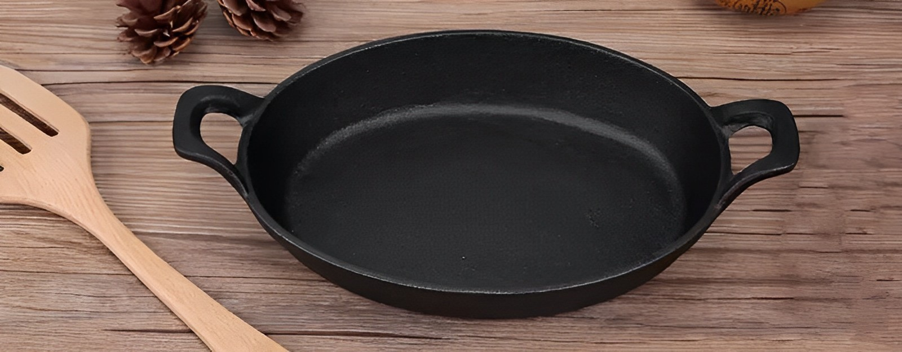
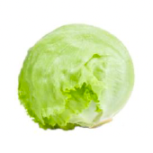
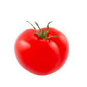
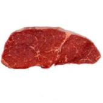
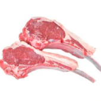
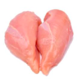
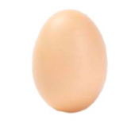

MY METAPHOR
Are you troubled by not knowing what to eat?
----Just drag and drop the food below into the pot!

Vegetables(only one can be selected each dish):
Broccoli

Lettuce

Tomato

Bok Choy
Meat(only one can be selected each dish):

Beef

Lamb

Chicken

Egg